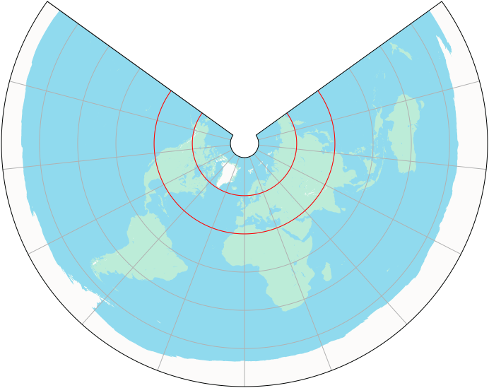
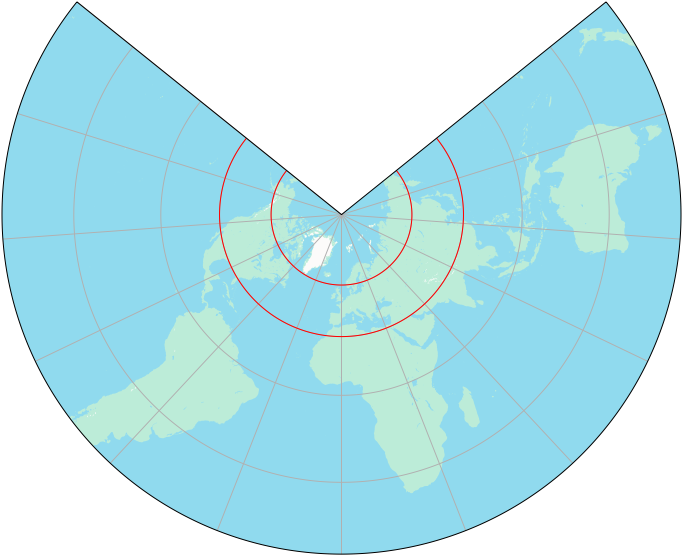

2024-10-25
I’m currently doing a deep dive to understand map projections, with the intention to implement some basic projections as part of the part of the simplefeatures project.
I’ve just gotten up to conic projections, which I’ve found to be the most interesting projections so far. This post gives a short demo of the projections I’ve implemented, and explains some of the key characteristics between the three projections.
The three conic projections I’ve implemented are:
In each of the projections, the map maker has to choose two standard parallels (lines of constant latitude). The map is true to scale along these standard parallels. In all of the examples below, the standard parallels are set to 30° and 60° north, but these are completely arbitrary choices.
In all of the conic projections, the scale elongates in an east-west direction north and south of the standard parallels. The scale compresses in an east-west direction between the standard parallels. This is a consequence of the shape that the map is being projected onto (the net of a cone, which the family of projections derives its name from).
The Equidistant Conic is the simplest and oldest of the three conic projections. It was invented by Ptolemy in the 2nd century AD.
The distinguishing feature of the Equidistant Conic is that it’s not just the standard parallels that are true to scale, it’s also the meridians (lines of constant longitude) that are true to scale. This can be seen in the image below, where the distance between each concentric arc (parallel) is the same.
This projection is useful for maps where the distance between two points that lie on the same meridian is important. For example, if you need to accurately represent the distance between two cities that are directly north or south of each other. It comes at the cost of distorting the shapes and areas of features.

The Albers Equal Area Conic projection is a relatively modern projection, invented by Heinrich Albers in 1805.
The distinguishing feature of the Albers Equal Area Conic is that areas are preserved everywhere. This is done by adjusting the distance between parallels to exactly cancel out the east-west stretching or compression that occurs at different latitudes. Parallels are space closer together south and north of the standard parallels, and spaced further apart between the standard parallels.
This projection is useful for maps where it’s important that areas of features are truly represented relative to each other (but comes at the cost of accurately representing their shapes).
The Lambert Conformal Conic projection is another relatively modern projection, invented by Johann Lambert in 1772.
The distinguishing feature of the Lambert Conformal Conic is that it’s conformal. This means that the angles that two straight lines on the globe cross each other at is preserved when projected onto the map. Effectively, this means that shapes don’t become “skewed”. Rectangles remain rectangles, rather than than being transformed into parallelograms.
This projection is useful for maps where the shape of features is important (but comes at the cost of inaccurately representing their sizes, and the distance to other features).
